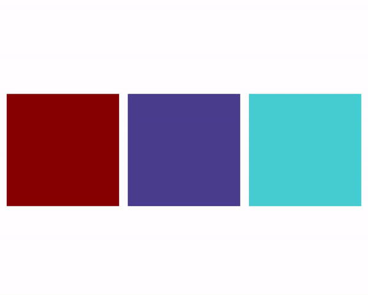

1
Адаптивный сайт #1
среднев VS Code
Создай сайт, как на анимации: при уменьшении экрана блоки перестраиваются. Смотреть видео.

🖥️ Это большое задание — делай его в VS Code на компьютере и открывай страницу в браузере. Не забудь выложить результат на свой сайт на GitHub!